Technical drawings and onshape
Throughout my entire time in Gr 9 Tech, I used onshape througout practically the whole course. This is an overview of all the onshape I did throughout the course.
Learning to cad
At the start of the year, I had no CAD experience, and I learned how to CAD throughout many tutorials, here are a few examples
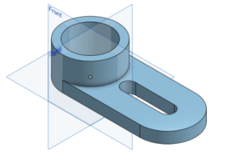Bearing
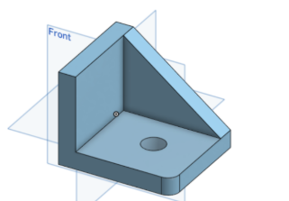Bracket
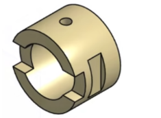Bushing
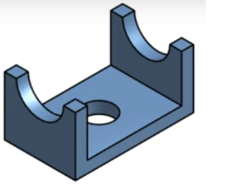Saddle Bracket
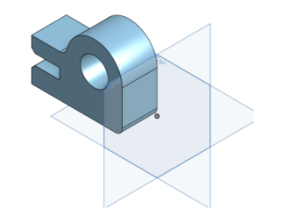Snap gauge
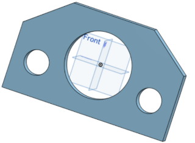Spacer plate
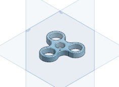Spinner
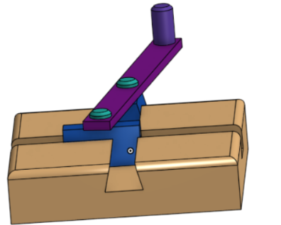The Do-Nothing Machine
CAD and Drawings in projects
After I learned CAD, I used it in virtually all of my projects afterwards
The tool tote
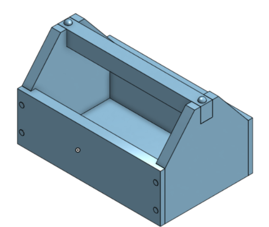 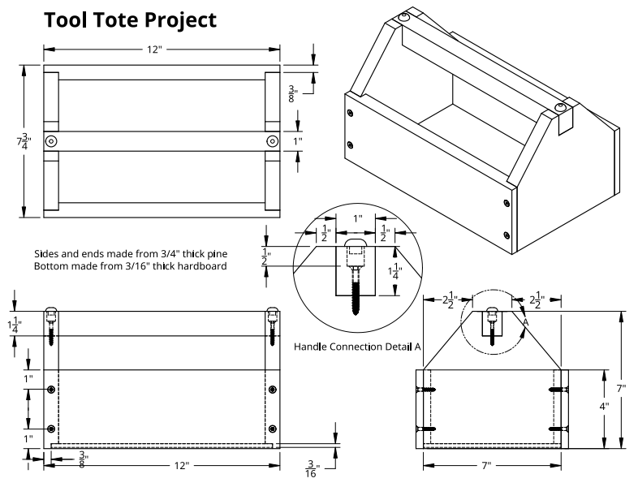Though the CAD that I did in the end wasn't too useful, the drawing of the CAD that was given was how I got my measurements.
The IronMan

I cadded my whole ironman project after I was done
This was a bit tricky as I had a lot of trouble with the ironman's body itself, and
the triangular part of the base took a while to figure out, I had to do some weird extrudes and fillets, but
eventually, I got it done.
The Boardgame
I didn't use the 3d printer for this project, however, I did do laser cutting which I used onshape for.


These two versions of trees were game elements for our board game
The nerf dart launcher
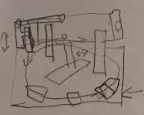 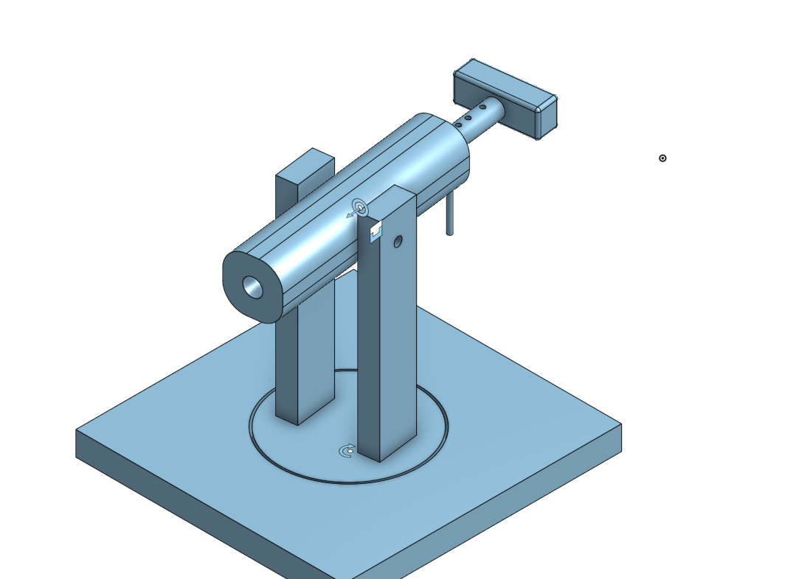 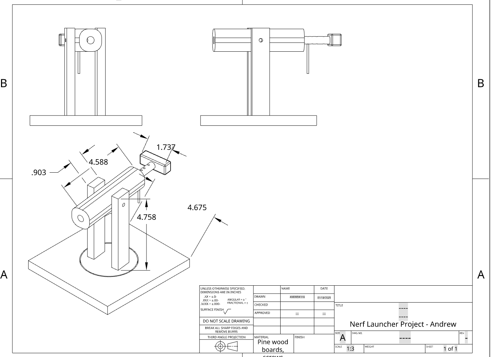My whole launcher was cadded on onshape.
Technical Drawings
The ironman project

This drawing consists of 3 thumbnail drawing of ideas, which I chose one from, then added detailed measurments to
The Nerf Dart launcher
[see nerf dart launcher page]Conclusion
In conclusion, Onshape has helped me communicate most of my drawings and